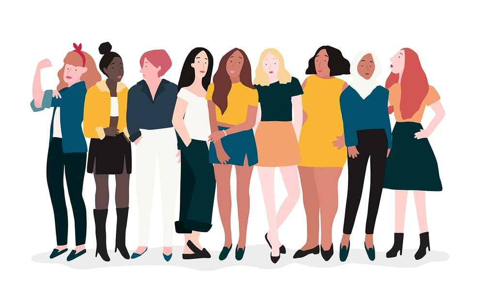

Desigualdade de Gênero
Texto sobre desigualdade de Gênero
O que é?
Desigualdade de gênero é a desigualdade de poder entre homens e mulheres. Desigualdade de poder refere-se ao acesso às oportunidades nos âmbitos econômico, político, educacional ou cultural.
Forma-se um círculo vicioso em que a ausência de mulheres nos espaços
de liderança e decisão impede que haja melhorias para elas no ambiente corporativo, na esfera pública e no ambiente familiar.
5 cenários onde mulheres ainda sofrem com a desengualdade de gênero
1. No mercado de trabalho
Segundo o IBGE, o rendimento das mulheres equivale a cerca de ¾ da renda masculina. Enquanto a média da renda dos homens foi de R$ 2.306, a das mulheres foi de R$ 1.764. Ou seja, as mulheres recebem 76,5% da quantia recebida pelos homens.
2. No ambiente familiar
As mulheres ainda são as principais responsáveis por cuidar dos filhos e da casa. Segundo o IBGE, 70% das mulheres trabalham fora de casa, mas 80% delas são responsáveis por cuidar dos filhos e da casa.
Além disso, 70% das mulheres que trabalham fora de casa
também são responsáveis por cuidar dos pais idosos.
3. Na política
As mulheres ainda são minoria na política. Segundo o IBGE, 51% dos cargos de vereadores são ocupados por homens. Além disso, apenas 10% dos deputados federais e 11% dos senadores são mulheres.
4. Na educação
De acordo com a UNESCO, as mulheres representam dois terços dos 750 milhões de adultos sem habilidades básicas de leitura e escrita. No mundo, existem mais meninas do que meninos fora da escola.
5. Na familia
Com um desempenho vital na vida das crianças, as mulheres chegam a gastar até 90% de sua renda com a família. Em comparação com os homens, o gasto deles fica em torno de 30 a 40%.
Como são as mulheres que sempre assumem maiores responsabilidades na família, elas que sempre arcam com o gasto familiar relacionado com a educação e a saúde das crianças.
Como Reduzir a Desigualdade de Gênero
Em primeiro lugar, é necessário aumentar o investimento no capital humano das mulheres. Os ganhos decorrentes do acesso igualitário das mulheres a alimentação, saúde e educação são especialmente grandes nas economias de mercados emergentes e em desenvolvimento. É o caso, por exemplo, das transferências de renda que ajudam as famílias a pagar bens essenciais em países onde a rede de proteção social é menos desenvolvida.
A segunda solução testada e aprovada é permitir às mulheres que trabalhem fora de casa ou criem o seu próprio negócio. A aplicação de reformas tributárias, dos gastos públicos, da infraestrutura financeira e regulamentos, assim como dos mercados de trabalho também pode revelar-se útil. Oferecer acesso a creches de qualidade e a um custo acessível libera mais mulheres para trabalhar, além de gerar emprego diretamente.
Por último, também é imprescindível aumentar a representação das mulheres em posições de liderança. Uma análise do FMI mostra que uma maior presença de mulheres nas instituições financeiras e na formulação de políticas financeiras está intrinsecamente ligada a um aumento da resiliência financeira. Além disso, nas empresas da fintech e do setor corporativo, foi estabelecida uma correlação entre o número superior de mulheres em cargos de liderança e o maior desempenho e rentabilidade registrados nos respetivos setores.